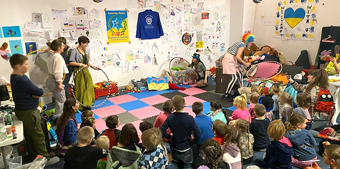
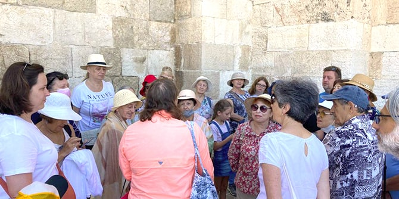
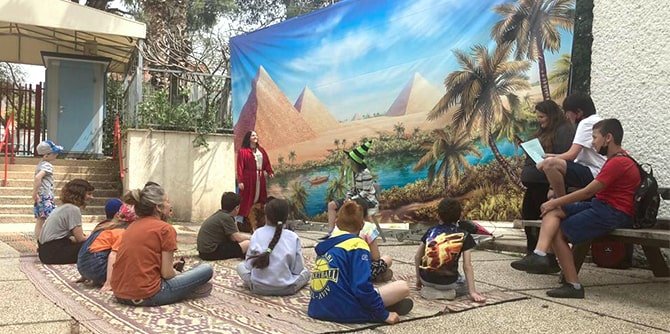
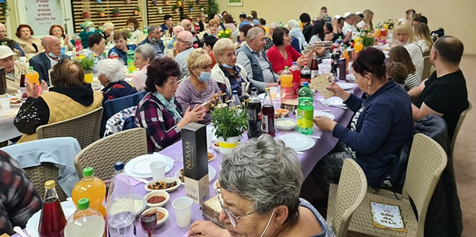
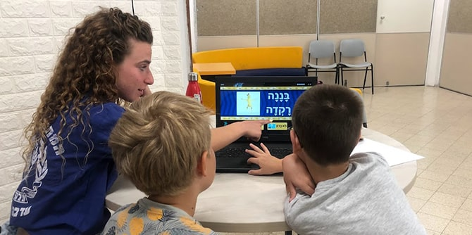

 אירוע לילדים אוקראינים בניהול בתי נוער הנחשונים. הארגון משתמש במענק שקיבל מקרן מנדל לקליטת פליטים ועולים מאוקראינה במרכזי קליטה קיימים. (צילום: אורן דדו ברקן)
לנוכח הטרגדיה של העם האוקראיני החליטה קרן מנדל לתמוך בפעילותם של בוגרי מנדל העוסקים בתחומי החינוך, החברה, הרווחה והתרבות, לשם סיוע לפליטים ולעולים החדשים מאוקראינה.
בנוסף, מתוך היכרות גם עם הקשיים הרבים שחווים העולים מאתיופיה לישראל, החליטה הקרן להציע סיוע לפרויקטים וליוזמות בראשות בוגרי מנדל, אשר מטרתם להיטיב את שילובם של יוצאי אתיופיה בחברה הישראלית.
לשם כך הזמינה הקרן בחודש מרס השנה את בוגרי מנדל להגיש בקשות למענקים שישמשו כדי לשפר את רווחתם של פליטים ועולים חדשים מאוקראינה ומאתיופיה. 39 ארגונים קיבלו מענקים בסך 100-50 אלף שקלים כל אחד, ובסכום כולל של מיליון דולרים.
 סיור בעיר העתיקה שערך בית מדרש אלול ל-33 פליטים אוקראינים. בזכות המענק מקרן מנדל, "אלול" מציע פעילויות לימוד חברתיות, תרבותיות וקבוצתיות לפליטים. (צילום: יאנה ניקולצ'ב)
הבוגרים הנבחרים והארגונים שלהם משתמשים במענקי הסיוע כדי לבצע מגוון פעילויות בכמה תחומים:
-
בתחום החינוך הוענקו מענקים לתוכניות שעניינן שילוב עולים במערכת החינוך הפורמלית בישראל וכן לתוכניות ולארגונים המספקים פעילויות חינוכיות בלתי פורמליות לילדים ולבני נוער, ומסייעים לקליטתם בחברה הישראלית.
-
בתחום המדיניות פועלים כמה בוגרים לשיפור מצבם של הפליטים והעולים בישראל על-ידי ייזום וגיבוש מדיניות השואפת לקדם השתלבות ארוכת טווח שלהם בחברה הישראלית.
- בזירה התרבותית, אחד הארגונים שקיבלו את המענק מקיים סדנאות תיאטרון המעצימות את הביטחון העצמי של בני נוער יוצאי אתיופיה ומסייעות להשתלבותם בחברה הישראלית. תוכנית אחרת מקדמת שיתופי פעולה אמנותיים בין אמנים מזרח אירופים לבין אמנים ישראלים מכל הסוגים (קולנוענים, מוזיקאים, סופרים וכו').
 פעילות לפליטים בני נוער אוקראינים שארגנה רשת "דרור בתי חינוך". הרשת משתמשת במענק שקיבלה מקרן מנדל לקליטת 20 בני נוער במרכזי החינוך שלה באמצעות "מאיצי עולים". (צילום: גיא שובל)
מענקים נוספים ניתנו לתוכניות שמטרתן שיפור בריאות הנפש והחוסן הנפשי, מתן ייעוץ פיננסי ומשפטי, וסיוע לפליטים ולעולים במציאת תעסוקה מתאימה.
אף שאלו רק כמה דוגמאות לפרויקטים שהקרן תומכת בהם, הן ממחישות את הדרכים השונות שבהן בוגרי מנדל נותנים מענה לאתגרים עכשוויים חשובים.
פליטים אוקראינים נהנים מארוחה חמה שאורגנה על-ידי ארגון "מאיר פנים" בזכות המענק מקרן מנדל. (צילום: אירנה סיזיקוב)
זו הפעם השנייה שקרן מנדל נענית לאתגר בזמן אמת ונותנת מענקים לפרויקטים של בוגרי מנדל לשם סיוע במשברים. בקיץ 2020 הוענקו 94 מענקים בסכום כולל של מיליון דולרים לבוגרי מנדל שהובילו יוזמות שנועדו לתת מענה לצרכים שהתעוררו במהלך משבר הקורונה בחברה הישראלית. לפרויקטים שקיבלו מענקים הייתה השפעה משמעותית על החברה הישראלית במהלך המגפה.
רשימה מלאה של בוגרים ושל ארגונים שקיבלו מענקים לטובת פליטים ועולים מאוקראינה וכן לעולי אתיופיה, אפשר למצוא כאן.

ילדים פליטים מאוקראינה לומדים עברית במרכז חינוך וטיפול שהקימה המועצה האזורית חבל אילות למשפחות המיועדות להיקלט באזור (צילום: מיכל קידר)
{kind=link}
{kind=link}
{kind=link}
{kind=link}
{kind=link}